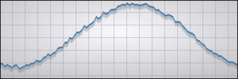

Scene Graph - Graph
Demonstrates how one can combine custom materials and geometries under a single QQuickItem.

Files:
- scenegraph/graph/graph.cpp
- scenegraph/graph/graph.h
- scenegraph/graph/gridnode.cpp
- scenegraph/graph/gridnode.h
- scenegraph/graph/linenode.cpp
- scenegraph/graph/linenode.h
- scenegraph/graph/main.qml
- scenegraph/graph/noisynode.cpp
- scenegraph/graph/noisynode.h
- scenegraph/graph/main.cpp
- scenegraph/graph/graph.pro
- scenegraph/graph/graph.qrc